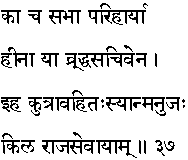
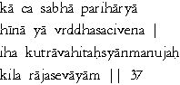

|

|
Verse 37 - Meaning:
Q: What (ka) kind of assembly (sabha) should one avoid (parihaarya)?
A: That one which lacks good and experienced ministers.(hiinaa-ya-vrddha-sacivena)
Q:About what should a man be extremely cautious (kutraa-vahitah-syaan-manujah) about in this life (iha) ?
A: In being a courtier (sevaayaam) of despotic kings or autocratic rulers (kila-raaja)
|